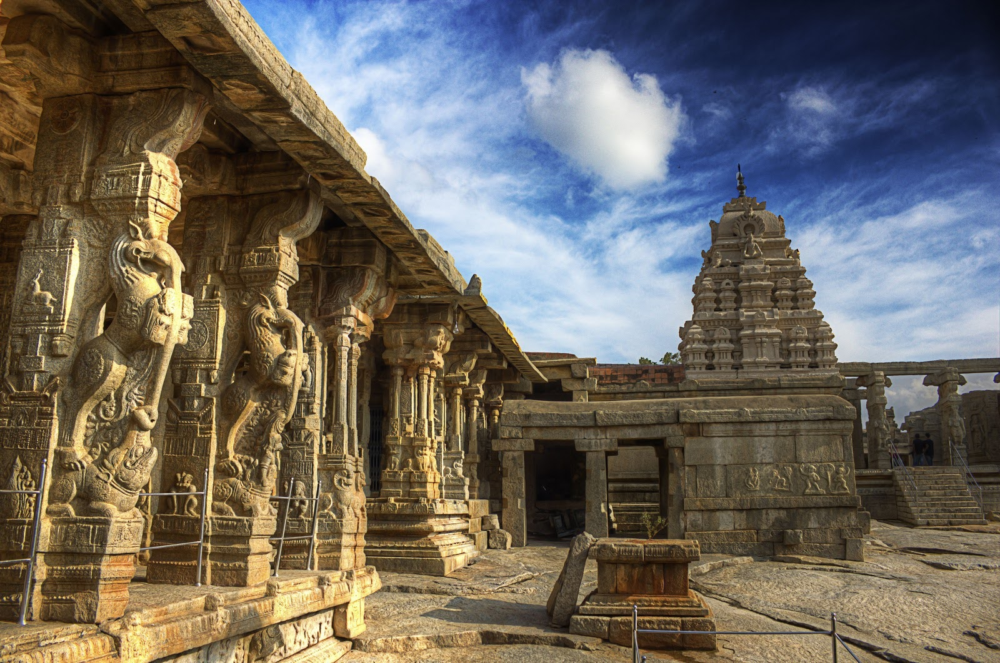
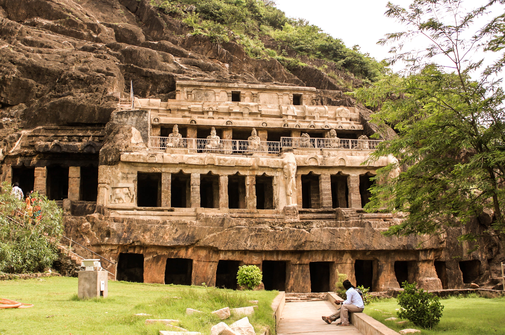

Architectural Heritage
The architecture of Madhya Pradesh reflects its rich history and cultural diversity. Here are some of the most notable architectural sites.

Khajuraho Temples:
The Khajuraho temples are renowned for their intricate sculptures and carvings, representing a blend of Hindu and Jain architecture.
